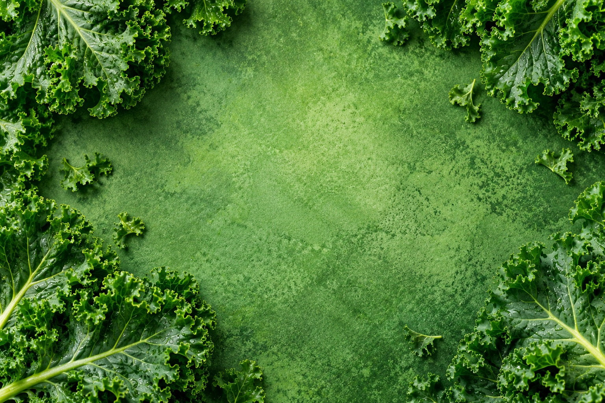

Kale Salad Recipe

Ingredients
- 1 bunch of fresh kale
- 2 tablespoons olive oil
- 1 tablespoon lemon juice
- 1 teaspoon honey
- 1 small cucumber
- 1 carrot
- Salt and pepper to taste
Instructions
- Wash the kale thoroughly.
- Remove the stems and chop the leaves.
- Slice the cucumber and carrot.
- Place the vegetables in a large bowl.
- Mix olive oil, lemon juice, and honey.
- Pour the dressing over the vegetables.
- Toss everything together.
- Season with salt and pepper.
- Serve and enjoy!